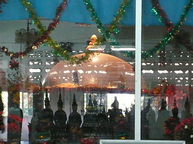

ワットケーク/ノーンカイ
Watｋｈａｅｋ/ NongKhai
元旦である。
今年はＫ1も紅白歌合戦もガラディーナもカウントダウンの乱痴気騒ぎもなく、静かに正月を迎えた。
あ、でも0時丁度には息を止めて「2年越しに息を止めた」とかそういうのはやってるんですけど…
で、元旦といえば初詣。
イサーンに居て初詣といえば、もう、ココしかないわけである。
それはワットケーク。
ヒンドゥー教と仏教をベースにしながらも奇妙なコンクリ大仏がてんこ盛りのアジア屈指の珍寺なのだ。
またの名をサラケオクーＳａｌａＫａｅｗＫｕともいうこの寺、思えば7年ぶりの再訪であった。（以前の様子はこちらから）
まあ、一度お伝えしているところなので、以前と変わった部分を中心にお伝えしよう…と思ったんですけどやっぱりお伝えせずにはいられない面白さ満載の寺だったりするんでその辺よろしく。
で、早速入口。相変わらず巨大な大仏さんがお出迎えしてくれる。
以前も未完成だったが、状態は全く変わらず。
中に入ると相変わらずのヘンテコ仏像が大集合。
しかし前回訪れた際に垂れ流されていた脳髄溶解サウンドは流れていなかった。評判悪かったんでしょうか…
この造形感覚、しかもディテールまでしっかり作り込んである。
しかも巨大、しかも大量。
うっとりしますね。
頭の先から尻尾の先まで全身これ全てオリジナリティのカタマリである。
改めてこの庭園（つか寺）を作り上げたルアンプー師の脳味噌のヒダヒダの懐の深さを思い知った。
コンクリとは思えないほど細い舌を出すナーガ。
繊細な仕事っぷりだが、だからといって全体の印象が繊細か、というとそうでもないところに人生の機微を感じてしまう。

大仏さんの下に人が集まって何かを見上げている。
げっ！左手の下に蜂の巣が！
頭のパンチパーマと絶妙なコンビネーションをなしていた。
ざっと境内を一回りした感じでは全体の様子としては以前とさほど変わらないようだ。
で、前回訪問時に一番印象的だった怪獣ゲート。
相変わらず人気のスポットである。
むむむ。
何やら白い紐を結んでいる人がいるぞ…
見れば脇のコンクリ娘達の合掌した手はがんじがらめになっちゃってる。
新手のおまじないか？
ゲートを潜ると、相変わらずの三面六手仏。
良い、実に良いデザインだ。
何でこんな素晴らしいモノが世界遺産にならないのか不思議でならない…
三面六手仏の周辺にある人の一生を現したコンクリ像にも白い紐が縛られていた。
これは以前見られなかった。
夫婦骸骨にもよく見ると白い紐が…
…まあ、骨になるまで夫婦一緒に仲良く、といった塩梅なのだろうが中にはこんな悲惨なケースも。
チョット！この子を置いて！またアノ女のところに行くんでしょ！
ナマズがのた打ち回る池のほとりには大仏さんが5体ほど並んでました。
この辺の造形力、デザイン力、何度見ても感心しっぱなし。
さて、ここからが本題です。
7年前に散々お願いしても行けなかった本堂の2階3階。今回はあっさりと行けちゃったのだ。
正月だから特別に公開されているのか、近年はずっと公開しっぱなしなのか定かではないが、これで憧れのルアンプー師のミイラと対面する事が出来る。
1996年に没した全珍寺舎弟の憧れの人物、ルアン・プー・ブンルア・スリラット。脳内世界の具現化部門で世界のトップ30に入るであろう（後の29人は誰だ！、とか言わないように）超ＶＩＰの尊顔が拝めるのだ。何たる僥倖！
慌てて3階に登っていったので2階の様子などほとんど記憶にありません。あしからず。
で、問題の3階。大勢の人達が参拝していた。
その間隙を縫ってルアンプー師のミイラが安置されているカプセルにがぶり寄り！

おおお、はじめまして。幻想大王ルアンプーさま。
アナタの偉業は日本にも（細々ながら）伝わってますぞ！
3階の壁には生前のルアンプーの肖像写真がズラリと。

何故か全部の写真に眉と目が黒く上書きされてました。
もしかしたらルアンプー師、リアルにすっげ濃い眉だったりして…
外を見れば様々な武器を持った大仏さんが目の前に迫っている。
正面を見れば様々なコンクリ神の雨あられ。
やっぱり凄いぜ、ワットケーク。
コレを年頭に拝めるとは、今年はいい年になりそうだ！
次の珍寺へGO！
泰国珍寺修行 北へ
珍寺大道場 HOME